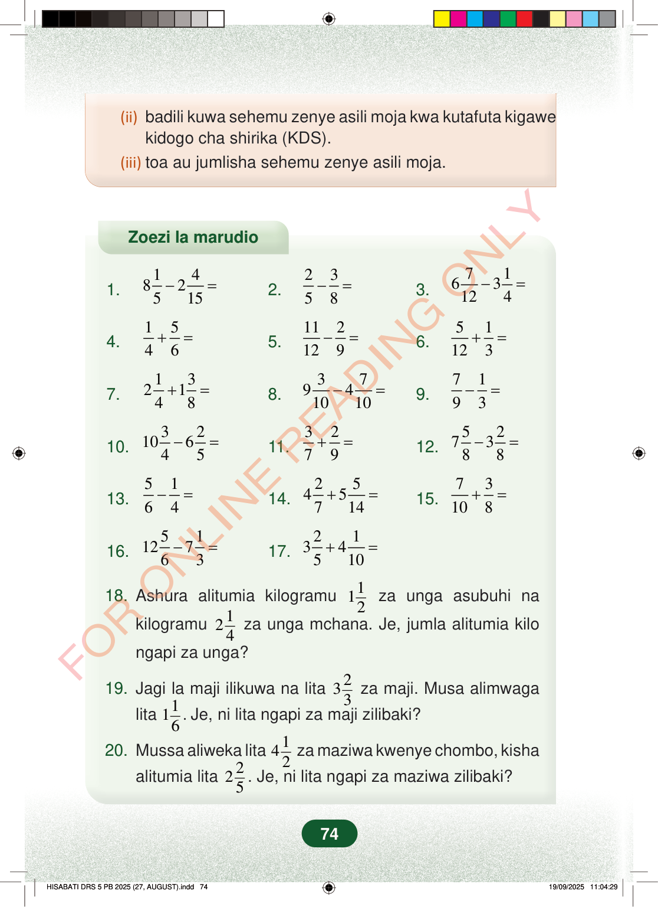

(ii)badili kuwa sehemu zenye asili moja kwa kutafuta kigawekidogo cha shirika (KDS).(iii)toa au jumlisha sehemu zenye asili moja.Zoezi la marudio1.1482515−=2.2358−=3.7163124−=4.1546+=5.112129−=6.51123+=7.132148+=8.37941010−=9.7193−=10.3210645−=11.3279+=12.527388−=13.5164−=14.2545714+=15.73108+=16.5112763−=17.2134510+=18. Ashura alitumia kilogramu112za unga asubuhi nakilogramu12 4za unga mchana. Je, jumla alitumia kilongapi za unga?19. Jagi la maji ilikuwa na lita233za maji. Musa alimwagalita116.Je, ni lita ngapi za maji zilibaki?20. Mussa aliweka lita14 2za maziwa kwenye chombo, kishaalitumia lita22 5. Je, ni lita ngapi za maziwa zilibaki?74
(ii) badili kuwa sehemu zenye asili moja kwa kutafuta kigawe
kidogo cha shirika (KDS). (iii) toa au jumlisha sehemu zenye asili moja.
Zoezi la marudio
1. 1 4 8 2 5 15 − = 2. 2 3 5 8 − = 3. 7 1 6 3 12 4 − =
4. 1 5 4 6 + = 5. 11 2 12 9 − = 6. 5 1 12 3 + =
7. 1 3 2 1 4 8 + = 8. 3 7 9 4 10 10 − = 9. 7 1 9 3 − =
10. 3 2 10 6 4 5 − = 11. 3 2 7 9 + = 12. 5 2 7 3 8 8 − =
13. 5 1 6 4 − = 14. 2 5 4 5 7 14 + = 15. 7 3 10 8 + =
16. 5 1 12 7 6 3 − = 17. 2 1 3 4 5 10 + =
18. Ashura alitumia kilogramu 1 12 za unga asubuhi na
kilogramu 1 2 4 za unga mchana. Je, jumla alitumia kilo
ngapi za unga?
19. Jagi la maji ilikuwa na lita 2 33 za maji. Musa alimwaga
lita 1 16 . Je, ni lita ngapi za maji zilibaki?
20. Mussa aliweka lita 1 4 2 za maziwa kwenye chombo, kisha
alitumia lita 2 2 5 . Je, ni lita ngapi za maziwa zilibaki?
74
(ii) badili kuwa sehemu zenye asili moja kwa kutafuta kigawe kidogo cha shirika (KDS).(iii) toa au jumlisha sehemu zenye asili moja.Zoezi la marudioZoezi la marudio la hisabati lenye maswali 20 ya kujumlisha na kutoa sehemu na namba changanyifu. Mwisho kuna maswali ya hadithi kuhusu unga, maji na maziwa.1.<math><mrow><mn>8</mn><mfrac><mn>1</mn><mn>5</mn></mfrac><mo>−</mo><mn>2</mn><mfrac><mn>4</mn><mn>15</mn></mfrac><mo>=</mo></mrow></math>2.<math><mrow><mfrac><mn>2</mn><mn>5</mn></mfrac><mo>−</mo><mfrac><mn>3</mn><mn>8</mn></mfrac><mo>=</mo></mrow></math>3.<math><mrow><mn>6</mn><mfrac><mn>7</mn><mn>12</mn></mfrac><mo>−</mo><mn>3</mn><mfrac><mn>1</mn><mn>4</mn></mfrac><mo>=</mo></mrow></math>4.<math><mrow><mfrac><mn>1</mn><mn>4</mn></mfrac><mo>+</mo><mfrac><mn>5</mn><mn>6</mn></mfrac><mo>=</mo></mrow></math>5.<math><mrow><mfrac><mn>11</mn><mn>12</mn></mfrac><mo>−</mo><mfrac><mn>2</mn><mn>9</mn></mfrac><mo>=</mo></mrow></math>6.<math><mrow><mfrac><mn>5</mn><mn>12</mn></mfrac><mo>+</mo><mfrac><mn>1</mn><mn>3</mn></mfrac><mo>=</mo></mrow></math>7.<math><mrow><mn>2</mn><mfrac><mn>1</mn><mn>4</mn></mfrac><mo>+</mo><mn>1</mn><mfrac><mn>3</mn><mn>8</mn></mfrac><mo>=</mo></mrow></math>8.<math><mrow><mn>9</mn><mfrac><mn>3</mn><mn>10</mn></mfrac><mo>−</mo><mn>4</mn><mfrac><mn>7</mn><mn>10</mn></mfrac><mo>=</mo></mrow></math>9.<math><mrow><mfrac><mn>7</mn><mn>9</mn></mfrac><mo>−</mo><mfrac><mn>1</mn><mn>3</mn></mfrac><mo>=</mo></mrow></math>10.<math><mrow><mn>10</mn><mfrac><mn>3</mn><mn>4</mn></mfrac><mo>−</mo><mn>6</mn><mfrac><mn>2</mn><mn>5</mn></mfrac><mo>=</mo></mrow></math>11.<math><mrow><mfrac><mn>3</mn><mn>7</mn></mfrac><mo>+</mo><mfrac><mn>2</mn><mn>9</mn></mfrac><mo>=</mo></mrow></math>12.<math><mrow><mn>7</mn><mfrac><mn>5</mn><mn>8</mn></mfrac><mo>−</mo><mn>3</mn><mfrac><mn>2</mn><mn>8</mn></mfrac><mo>=</mo></mrow></math>13.<math><mrow><mfrac><mn>5</mn><mn>6</mn></mfrac><mo>−</mo><mfrac><mn>1</mn><mn>4</mn></mfrac><mo>=</mo></mrow></math>14.<math><mrow><mn>4</mn><mfrac><mn>2</mn><mn>7</mn></mfrac><mo>+</mo><mn>5</mn><mfrac><mn>5</mn><mn>14</mn></mfrac><mo>=</mo></mrow></math>15.<math><mrow><mfrac><mn>7</mn><mn>10</mn></mfrac><mo>+</mo><mfrac><mn>3</mn><mn>8</mn></mfrac><mo>=</mo></mrow></math>16.<math><mrow><mn>12</mn><mfrac><mn>5</mn><mn>6</mn></mfrac><mo>−</mo><mn>7</mn><mfrac><mn>1</mn><mn>3</mn></mfrac><mo>=</mo></mrow></math>17.<math><mrow><mn>3</mn><mfrac><mn>2</mn><mn>5</mn></mfrac><mo>+</mo><mn>4</mn><mfrac><mn>1</mn><mn>10</mn></mfrac><mo>=</mo></mrow></math>18.Ashura alitumia kilogramu <math><mrow><mn>1</mn><mfrac><mn>1</mn><mn>2</mn></mfrac></mrow></math> za unga asubuhi na kilogramu <math><mrow><mn>2</mn><mfrac><mn>1</mn><mn>4</mn></mfrac></mrow></math> za unga mchana. Je, jumla alitumia kilo ngapi za unga?19.Jagi la maji ilikuwa na lita <math><mrow><mn>3</mn><mfrac><mn>2</mn><mn>3</mn></mfrac></mrow></math> za maji. Musa alimwaga lita <math><mrow><mn>1</mn><mfrac><mn>1</mn><mn>6</mn></mfrac></mrow></math>. Je, ni lita ngapi za maji zilibaki?20.Mussa aliweka lita <math><mrow><mn>4</mn><mfrac><mn>1</mn><mn>2</mn></mfrac></mrow></math> za maziwa kwenye chombo, kisha alitumia lita <math><mrow><mn>2</mn><mfrac><mn>2</mn><mn>5</mn></mfrac></mrow></math>. Je, ni lita ngapi za maziwa zilibaki?Mazoezi 1–20.